Navigation
 ČESKÁ verze
ČESKÁ verze- The best of New Guinea
- PNG & West Papua
- Today cannibals
- First Contact expedition
- Tribe Expedition
- ITINERARIES AND SCHEDULE
- Carstensz Pyramid - Top of Papua
- Korowai & Kombai tribe – Papua Tree people tribes
- Korowai Batu & Kopkaga - tree people
- Asmat tribe – the Papuan cannibals
- Yali tribe
- Mamberamo river of West Papua
- Dani tribe in Baliem Valley
- Lani tribe in Baliem Valley
- Wamena as a first contact place on West Papua highlands
- Papua New Guinea
- Goroka Show & Mt. Hagen Show
- Asaro Mudman
- Huli tribe – the wig-men
- Why to go with us
- The films from our expeditions
- References
- Papua Postcards
- Papua Internet
- Links
- Contact us
- Download
photos – Tree People Korowai Expedition 2015
.JPG)
Korowai – one of the village chief, father and a leader of his family
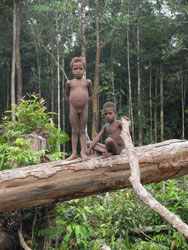
those who will replace him
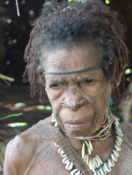
and a lady remembering his father´s leadership
.jpg)
*********
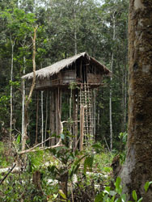
tree houses
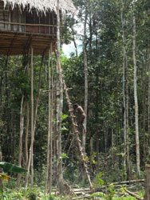
*********
.jpg)
cooking in the ladies´ part of the house
.JPG)
females are not allowed to enter males´ part of the house unasked
.JPG)
*********
.jpg)
*********
.JPG)
*********
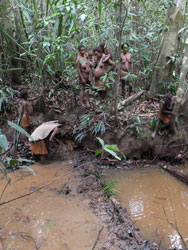
in the beginning, a flow must be dammed
.JPG)
then the water drained
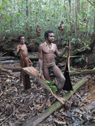
finally, what is catched is taken home for the dinner
.JPG)
Brasilian film staff is busy…
.JPG)
…and very interesting!
.JPG)
bones are the most fancied decoration of a house
.JPG)
houses are often full of guest and food
.JPG)
the more shared food, the more bones to commemmorate it (animal ones these days, of course)
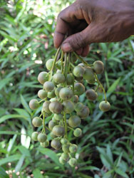
vitamines
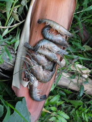
proteins
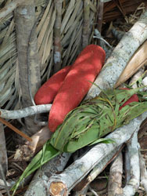
sacharides (Pandamun conoideus – „maskot flora“
.JPG)
all village takes part in cooking
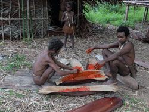
red sauce Buah Merah, very popular
.jpg)
*********
.JPG)
*********
.jpg)
*********
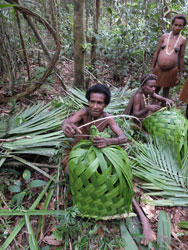
making rotang fish traps
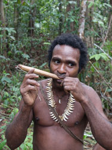
playing a musical instrument
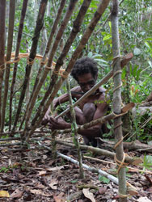
trap construction
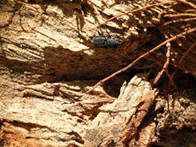
*********
.JPG)
*********
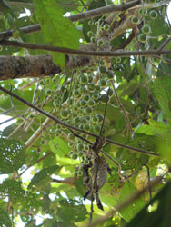
fruit of a local species of mango
.JPG)
**
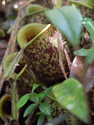
carnivorous Nepenthes insignis
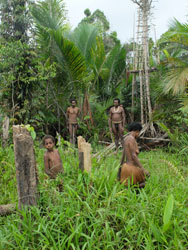
there is a cut space around houses
.JPG)
where banana and other products can be grown
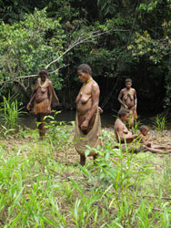
women and childer picking edible plants
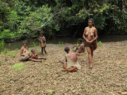
relaxation by a river
.JPG)
rain comes usually every afternoon
.JPG)
mothers
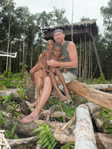
Petr Jahoda playing with children
.JPG)
Korowai family in front of their house
.JPG)
young Papuan ladies can be really beautifull
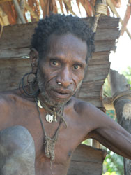
richly decorated Korowai
.JPG)
elderly hunter
.JPG)
mountain tribe of Dani
.JPG)
visitors can enjoy fight show
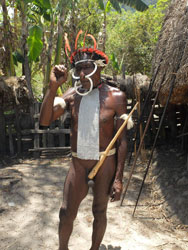
for the fight, decoration is necessary
.JPG)
boar teeth in the nose shaped up mean the fighter is ready and agresive enough
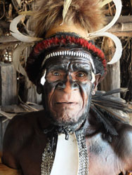
another expressive type of Dani fight decoration
.JPG)
do-or-die
.JPG)
referee?
.JPG)
a group ready for ritual fight
.JPG)
Dani fighters leaving their village
.JPG)
time to prepare for oncoming events